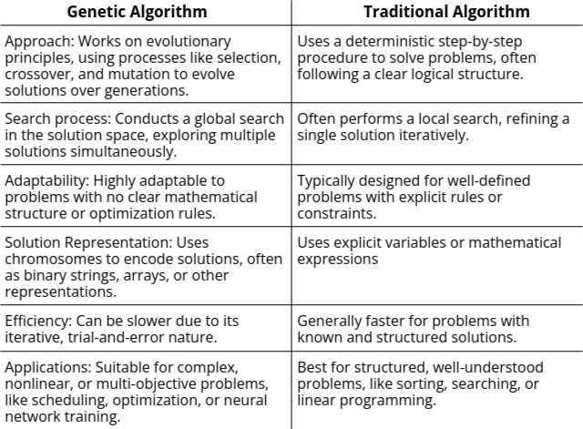
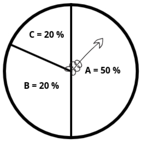

Genetic Algorithm
- First, we will understand where the concept of Genetic Algorithm originated from, then we will explore why we are using Genetic Algorithms and how they work.
- The concept of Genetic Algorithms originates from Evolutionary Algorithms.
- Evolutionary Algorithms are those algorithms that mimic certain biological and physical behaviors. By simulating these natural behaviors, whether biological or physical, we have developed algorithms that provide significant advantages for our computer systems. These algorithms help optimize processes in our systems when simulated effectively.
-
What are the biological behaviors that we can simulate in our computers:
- Genetics and Evolution: These biological concepts form the foundation of the "Genetic Algorithm." Therefore, we can say that Genetic Algorithms are a subset of Evolutionary Algorithms.
- Human Nervous System: This behavior has been used to develop Artificial Neural Networks, which mimic the functioning of the human brain to solve complex problems.
- Behavior of Ant Colonies: By studying the behavior of ant colonies, we have developed the Ant Colony Optimization technique, which is used for solving optimization problems like finding the shortest path in networks.
-
Now, what are the physical behaviors that can be simulated:
- Learning: The human learning system has been simulated to develop Fuzzy Logic, which helps computers make decisions in uncertain environments.
- Swarming of Particles: The concept of grouping particles has been utilized in the Particle Swarm Optimization technique, which is used for solving optimization problems by simulating the behavior of swarming particles.
Genetic Algorithm Definition
- A Genetic Algorithm (GA) is a subset of Evolutionary Algorithms that models biological processes, such as genetics and evolution, to optimize highly complex functions. GA is like a computer version of nature's way of solving problems. It takes inspiration from how living organisms evolve and improve over generations through biological processes like genetics and natural selection.
- When you have a problem that’s super complicated—something where traditional methods struggle to
find a solution—GAs step in. They are particularly helpful when:
- The problem is tough to define mathematically: Think of it like trying to describe the exact rules of a game with lots of unknowns.
- There are too many factors involved: Imagine trying to find the perfect recipe with hundreds of ingredients—traditional methods would take forever to test all combinations.
- GAs work by mimicking evolution. They create a "population" of possible solutions and then "evolve" them over time. The bad solutions get eliminated, and the good ones are improved by mixing and mutating them, just like in genetics. This way, GAs keep improving until they find an optimal (or near-optimal) solution.
Background of Genetic Algorithm (GA)
- Introduced by Prof. John Holland from the University of Michigan, USA, in 1965.
- The first detailed article on Genetic Algorithms was published in 1975 in his book "Adaptation in Natural and Artificial Systems".
- GA is based on two fundamental biological processes:
- Genetics: A concept introduced by Gregor Johann Mendel in 1865, which is the branch of biology that studies genes, genetic variation, and heredity in living organisms.
- Evolution: A theory proposed by Charles Darwin in 1859 in his book "On the Origin of Species". Evolution describes how populations of organisms change over generations through processes like natural selection and survival of the fittest.
- Genetics: Focuses on the transmission of genetic material (DNA) and how variations occur in populations through mechanisms like mutation and recombination.
- Evolution: Refers to the gradual process by which organisms develop and diversify from earlier forms through natural selection, genetic drift, and adaptation.
Genetic Algorithm Working Principles
Until now, we have understood that Genetic Algorithms (GA) are inspired by genetics and evolution. Now, we will dive deeper into these concepts to explore more terminologies and understand their relevance to GAs.
- Genetics
- Cells: Cells are the basic building blocks of living organisms. Whether it is an animal, a human, or any other living organism, cells form the foundational structure of their bodies.
- Chromosomes: A chromosome is a thread-like structure made of DNA and proteins found in the nucleus of cells. It carries genetic information in the form of genes, which determine an organism's traits and functions. In humans, chromosomes are arranged in pairs—we have 46 chromosomes (23 pairs) in each cell.
- Genes: Chromosomes are made up of smaller segments called genes, which are the basic units of heredity.
- Blocks of DNA: Genes are specific sequences within DNA that encode instructions for particular traits or characteristics.
- Encoded Traits: Each gene is responsible for encoding specific traits, such as hair color, eye color, or height.
- Evolution
- Heredity: The process by which genetic information is passed from one generation to the next, ensuring that offspring inherit traits from their parents.
- Diversity: The variety of genetic combinations within a population, which is essential for adaptation and survival in changing environments.
- Selection: The process where individuals with favorable traits are more likely to survive and reproduce, passing on those advantageous traits to the next generation.
- Ranking: A method of prioritizing or ordering individuals within a population based on their fitness or adaptability to the environment.
Intuition Behind Genetic Algorithm:
To understand the intuition behind Genetic Algorithms (GA), let us consider a hypothetical scenario. Suppose we want to improve the overall population of a country by ensuring that only the best individuals contribute to future generations. The process might work as follows:
- Select all the good people in the population based on specific criteria (e.g., honesty, intelligence, or productivity) and allow only them to reproduce, extending their lineage to the next generation.
- Repeat this process over several generations, where only the individuals meeting the desired criteria are allowed to pass on their traits.
- Over time, the population evolves, and eventually, we end up with an entire generation of "good" individuals who meet the desired standards.
- The fundamental idea is to introduce changes in the input (in this case, the population) to achieve an improved output (a better society or country).
Similarly, in a Genetic Algorithm, the "population" refers to a set of candidate solutions, and "good individuals" represent the solutions with higher fitness. By iteratively selecting, reproducing, and improving these solutions, GAs aim to optimize results and achieve the best possible outcome for complex problems.
Now that we have a better understanding of Genetic Algorithms, we can refine our definition as follows:
Genetic Algorithm Definition: A Genetic Algorithm (GA) is an optimization technique that aims to determine the best possible input values to achieve the most optimal output or results for highly complex problems. It does this by simulating natural biological processes such as genetics and evolution.
GAs are particularly effective for problems that:
- Are computationally expensive to solve using traditional methods.
- Involve a large number of parameters or variables.
- Cannot be modeled mathematically with ease (e.g., NP-hard problems).
Traditional Algorithm
- Traditional algorithms are step-by-step methods designed to solve specific problems or perform tasks in a logical and systematic way. They are widely used in computer science and mathematics for problem-solving.
- Key features:
- Fixed Steps: These algorithms follow a predefined set of steps to solve a problem.
Think of it like a recipe for cooking—step-by-step instructions that you follow exactly. - Deterministic: They give the same output every time for the same input.
For example, if you calculate the sum of two numbers, you always get the same result. - Efficiency: They are designed to be efficient in terms of time and memory usage.
- Fixed Steps: These algorithms follow a predefined set of steps to solve a problem.
- Types of Traditional Algorithms:
- Sorting Algorithms: Bubble Sort, Merge Sort, Quick Sort.
- Searching Algorithms: Binary Search, Linear Search.
- Mathematical Algorithms: Fibonacci Sequence
- Graph Algorithms: Dijkstra’s Algorithm
Difference Between Soft Computing and Traditional Algorithm
Flow Chart of Genetic Algorithm (GA)
So far, we have explored Genetic Algorithms (GA) from a biological perspective. Now, let us examine GA from a mathematical viewpoint. For complex problems where designing a solution or optimizing a mathematical model is challenging, GA provides a structured way to approach the problem. To understand this, we first need to familiarize ourselves with some key terminologies:
- Population: The population represents a subset of all possible solutions to the given problem. It is essentially a group of candidate solutions that evolves over generations to find the optimal or near-optimal solution.
- Chromosome: A chromosome is a single candidate solution within the population. Each chromosome encodes a potential solution to the problem being addressed.
- Gene: A gene is an individual element or position within a chromosome. It represents a specific parameter or characteristic of the solution. For example, if the problem involves optimizing a function with multiple variables, each variable corresponds to a gene.

By understanding these fundamental concepts, we can better visualize how Genetic Algorithms work
mathematically to solve complex optimization problems. A flow chart for GA typically includes steps such
as initializing the population, evaluating fitness, selection, crossover, mutation, and generating new
populations iteratively until a stopping criterion is met.
Now following is the flowchart.

-
Population Initialization:
The algorithm begins by creating a population, which is simply a group of possible solutions (or
"guesses") for the problem at hand. Each solution is called an individual, and it is represented as
a chromosome—a way to encode the details of the solution.
- For example, if the problem is to design a fuel-efficient car, a chromosome might include traits like engine size, body shape, and tire type.
- This initial population is generated randomly, ensuring there is enough variety for the algorithm to work with. Think of it like brainstorming a bunch of rough ideas to start with.
-
Fitness Function Calculation:
Next, the algorithm checks how good each guess is using a fitness function. This function acts like
a scoring system, evaluating how well each solution performs.
- For instance, if the goal is to design a fuel-efficient car, the fitness function could measure how far each car can travel on a gallon of fuel. The farther it goes, the higher its fitness score.
- This step is crucial because it helps the algorithm figure out which solutions are worth keeping and improving.
-
Selection:
Once the guesses are scored, the algorithm chooses the best ones to create the next generation of
solutions. This is called selection, where better solutions (those with higher fitness scores) have
a higher chance of being picked as “parents.”
- Think of it like picking the best ideas from your brainstorming session to refine further.
- However, weaker solutions aren’t completely ignored—they still have a small chance of being selected to maintain diversity and avoid missing out on potentially good ideas.
-
Crossover:
In this step, the selected parents "mate" to create offspring. This process is called crossover and
involves combining parts of each parent’s chromosome to create a new solution.
- For example, if one car has a small engine (from Parent A) and another has an aerodynamic shape (from Parent B), the offspring might inherit both the small engine and the aerodynamic shape, creating a more fuel-efficient car.
- This step mixes the best traits of the parents, increasing the chances of producing better solutions.
-
Mutation:
To keep exploring new ideas, the algorithm applies mutation, which is a small, random tweak to some
offspring.
- For example, a car’s tire type might be slightly adjusted, or its engine size might be fine-tuned.
- Mutation is important because it ensures the algorithm doesn’t get stuck refining only one part of the solution space. It keeps the search broad, helping the algorithm find better solutions over time.
Genetic Operators and Their Types
- Genetic operators are mechanisms used in Genetic Algorithms to guide the algorithm toward an optimal solution for a given problem.
- These operators modify the genetic composition of the offspring to ensure diversity and better solutions in subsequent generations.
- They work together in a structured manner, ensuring the algorithm's overall success.
-
Types of Genetic Operators:
- Selection
- Crossover
- Mutation
Selection
- The main purpose of the selection operator is to prioritize better solutions (higher fitness scores) and eliminate weaker solutions, ensuring only the fittest individuals contribute to the next generation.
- This operator is based on the principle of "survival of the fittest." It selects the best pair of solutions from a population using a fitness function to pass on their genes to the next generation.
- The population size remains constant after selection, maintaining a balanced pool of solutions.
- Different methods are used to select the best solutions, such as:
- Fitness Proportionate Selection (Roulette Wheel Selection)
- Tournament Selection
- Rank-Based Selection
Crossover
- Crossover involves combining genetic material from two or more parent solutions (chromosomes) to produce a child solution. This process helps the algorithm create new, potentially better solutions by merging the strengths of the parents.
- This process simulates reproduction by recombining genetic material from the selected parents to produce offspring with potentially improved characteristics.
- Example:
Parent 1: A B C D E F G H
Parent 2: E G B C D H A F
Offspring: A B C D D H A F
The offspring inherits the first half from Parent 1 and the second half from Parent 2.
Mutation
- The mutation operator promotes genetic diversity among solutions, ensuring that the Genetic Algorithm does not converge prematurely to suboptimal solutions.
- During mutation, a solution may undergo small, random changes, potentially leading to significant improvements in the overall population.
- Mutation introduces small, random changes in the DNA sequence of chromosomes, promoting diversity and helping to avoid local optima.
- Example:
Before Mutation: A B C D E F G
After Mutation: A B C X E F G
Here, a single gene (D) has been replaced with a random value (X).
Encoding
- Encoding is the process of representing individual genes in a format suitable for solving a given problem. The choice of encoding depends on the nature of the problem being addressed.
Types of Encoding
1. Binary Encoding:
- Binary encoding is the most common method of encoding, where each chromosome is represented as a binary string (sequence of 0s and 1s).
- Example:
Chromosome 1: 1 0 1 1 0 1 1 0 0 1
Chromosome 2: 0 1 1 0 0 0 1 0 1 1 - Each chromosome consists of a binary string where each bit represents a characteristic of the solution. Every string represents a solution, but not necessarily the optimal one.
2. Octal Encoding:
- In octal encoding, chromosomes are represented using octal numbers (base-8).
- Example:
Chromosome 1: 7 3 1 4
Chromosome 2: 6 5 2 0 - Each digit in the octal number represents a specific property or parameter of the solution.
3. Hexadecimal Encoding:
- Hexadecimal encoding uses hexadecimal numbers (base-16) to represent chromosomes. This encoding allows for compact representation of larger values.
- Example:
Chromosome 1: A F 2 9
Chromosome 2: B 4 D 3 - Each hexadecimal digit can encode values from 0 to 15, making it useful for specific problems requiring high compactness.
4. Permutation Encoding:
- Permutation encoding is used for problems where the solution involves an ordered sequence of items, such as the Traveling Salesman Problem (TSP).
- Example:
Chromosome 1: [3, 5, 1, 4, 2]
Chromosome 2: [2, 4, 3, 5, 1] - Each number in the sequence represents a specific item, task, or city in the solution.
5. Value Encoding:
- In value encoding, chromosomes are represented as sequences of real numbers or other data types suitable for the problem.
- Example:
Chromosome 1: [12.5, 18.2, 7.8, 15.4]
Chromosome 2: [10.0, 20.5, 8.1, 14.9] - This type of encoding is ideal for problems involving continuous variables or real-valued solutions, such as neural network weights or optimization of physical systems.
Parent Selection in Genetic Algorithm
- Parent selection is the process of selecting parents that will mate and recombine to create offspring for the next generation.
- The choice of parent solutions determines whether the next generation will be optimized, making it one of the crucial factors in a genetic algorithm.
- Different techniques for parent selection include:
- Fitness Proportionate Selection
- Tournament Selection
- Rank Selection
- Random Selection
Fitness Proportionate Selection
- In this method, every individual has a chance of being selected as a parent, with a probability proportional to its fitness.
- Fitter individuals are more likely to be selected, increasing the likelihood of propagating their traits to the next generation.
- Types of fitness proportionate selection:
- Roulette Wheel Selection
- Stochastic Universal Sampling
Roulette Wheel Selection
- In this technique, the selection probability for each individual is represented as a segment on a circular wheel, where the size of the segment is proportional to the fitness value of the individual.
- Example:
- Individual A (Fitness: 50) → Segment size: 50%
- Individual B (Fitness: 30) → Segment size: 30%
- Individual C (Fitness: 20) → Segment size: 20%
A random spin of the wheel determines which individual is selected.

Tournament Selection
- Tournament Selection is another way to pick individuals for reproduction in a Genetic Algorithm. Instead of selecting individuals based on their fitness scores directly, it randomly selects a small group of individuals (the "tournament"), and then the best individual from this group gets chosen to move on to the next generation.
- It’s like a sports tournament, where several competitors (individuals) compete against each other, and only the winner advances!
- How It Works:
- Pick a Random Group: The algorithm randomly picks a small group of individuals (say 2, 3, or 5). This is the "tournament."
- Compare Fitness: Within the tournament group, the individuals are compared based on their fitness scores. The individual with the highest fitness in the group is selected as the winner.
- Repeat: The tournament is repeated several times to select multiple individuals for the next generation.
- Example: Let's say we have 4 individuals with these fitness scores:
- A: 30
B: 50
C: 10
D: 20 - Step 1: Tournament Group Selection.
Suppose we choose a tournament size of 2 (select 2 individuals randomly to compete).
In one tournament, we randomly select A and C.
In another tournament, we randomly select B and D. - Step 2: Compare Fitness and Select Winner.
Between A and C, A wins (since 30 > 10).
Between B and D, B wins (since 50 > 20). - Step 3: Repeat.
This process continues until enough individuals are selected for reproduction.
- A: 30
Rank Selection
- Rank Selection is a method in Genetic Algorithms that selects individuals for reproduction based on their rank rather than their actual fitness score. The basic idea is to rank all individuals in the population from the best to the worst and then select parents based on these ranks. This method helps prevent selection bias that can occur when fitness differences are too large.
- How It Works:
- Rank the Individuals: First, all the individuals in the population are sorted by their fitness. The best individual gets rank 1, the second best gets rank 2, and so on. If two individuals have the same fitness, they can be given the same rank, or a tie-breaking rule can be used.
- Assign Selection Probability: Instead of using fitness scores directly, each individual is selected based on their rank. Individuals with higher ranks have a better chance of being selected, but the selection probability doesn’t depend on how much better their fitness is compared to others.
- Select Parents: Parents are chosen based on their rank, with the highest-ranked individuals having a better chance of being selected. A common way to do this is by using a probability distribution that favors higher-ranked individuals but still gives some chance to those with lower ranks.
- Example:
Let’s say we have 4 individuals with the following fitness scores:
A: 30
B: 50
C: 10
D: 20- Step 1: Rank the Individuals.
B is the best (rank 1),
A is second (rank 2),
D is third (rank 3),
C is fourth (rank 4).
- Step 1: Rank the Individuals.
- Step 2: Assign Selection Probability Based on Rank.
Let’s say the selection probability is based on rank, where the higher the rank, the higher the chance of selection. So, the probabilities might be:
B (rank 1) has the highest chance,
A (rank 2) has a lower chance,
D (rank 3) and C (rank 4) have even lower chances. - Step 3: Select Parents.
If we are selecting 2 parents for the next generation, we’ll likely pick B (the top-ranked individual) and maybe A or D, depending on the selection mechanism.
Random Selection
- Random Selection is the most straightforward method in Genetic Algorithms for picking individuals for reproduction. As the name suggests, it randomly selects individuals from the population, with no regard to their fitness scores. Every individual has an equal chance of being selected, regardless of how well they perform in solving the problem.
- How It Works:
- Pick Random Individuals: The algorithm simply picks individuals randomly from the population to serve as parents for the next generation.
- Equal Chances for All: Unlike other selection methods (like Rank or Tournament), Random Selection doesn’t favor individuals with higher fitness scores. Everyone has the same chance of being selected.
- Example:
Let’s say we have 4 individuals with the following fitness scores:
A: 30
B: 50
C: 10
D: 20- Using Random Selection, any of these individuals could be picked to create offspring. It could be:
A and C
B and D
A and B, or any other combination—there’s no bias toward higher or lower fitness.
- Using Random Selection, any of these individuals could be picked to create offspring. It could be:
Crossover and Its Types
- Crossover is a genetic operator that combines (mates) two chromosomes (parents) to produce a new chromosome (offspring).
- The main idea behind crossover is that the new chromosome may be better than both parents if it inherits the best characteristics from each parent.
Types of Crossover
1: One-Point Crossover
- In one-point crossover, a single crossover point is selected on the parent chromosomes. The segments of the parents' chromosomes before and after the crossover point are swapped to produce offspring.
- Example:
- Parent 1: A B | C D E F G H
- Parent 2: X Y | Z W Q R S T
- Offspring 1: A B | Z W Q R S T
- Offspring 2: X Y | C D E F G H
(Crossover occurs at position 2)
2: Two-Point Crossover
- In two-point crossover, two crossover points are selected on the parent chromosomes. The segments between the two points are swapped to create offspring.
- Example:
- Parent 1: A B C | D E | F G H
- Parent 2: X Y Z | W Q | R S T
- Offspring 1: A B C | W Q | F G H
- Offspring 2: X Y Z | D E | R S T
(Crossover points are at positions 3 and 5)
3: Uniform Crossover
- In uniform crossover, each gene (bit) from the parents is independently chosen with equal probability to be part of the offspring. This allows for more random combinations of traits.
- Example:
- Parent 1: A B C D E F G H
- Parent 2: X Y Z W Q R S T
- Offspring: A Y C W E R G T
(Randomly selected genes from each parent form the offspring)
4: Half-Uniform Crossover (HUX)
- In HUX, exactly half of the differing genes between the two parents are swapped to produce offspring. This method focuses on diversity while retaining half of the parental characteristics.
- Example:
- Parent 1: A B C D E F G H
- Parent 2: X Y Z W Q R S T
- Genes differing: All genes
- Offspring 1: A Y C D Q F S H
- Offspring 2: X B Z W E R G T
5: Three-Point Crossover
- In three-point crossover, three crossover points are selected, and segments between alternate points are swapped between the parents.
- Example:
- Parent 1: A B | C D | E F | G H
- Parent 2: X Y | Z W | Q R | S T
- Offspring 1: A B | Z W | E F | S T
- Offspring 2: X Y | C D | Q R | G H
(Crossover points are at positions 2, 4, and 6)
6: Shuffle Crossover
- In shuffle crossover, the genes in the parent chromosomes are randomly shuffled before crossover, and then the one-point or two-point crossover is applied. Afterward, the offspring genes are unshuffled back to the original order.
- Example:
- Original Parent 1: A B C D E F G H
- Original Parent 2: X Y Z W Q R S T
- Shuffled Parent 1: D C A E B H F G
- Shuffled Parent 2: W Z Y Q X S R T
- One-point crossover produces:
Offspring 1: D C A | Q X S R T
Offspring 2: W Z Y | E B H F G
- Unshuffled Offspring 1: A B C Q E F R H
- Unshuffled Offspring 2: X Y Z D B G S T